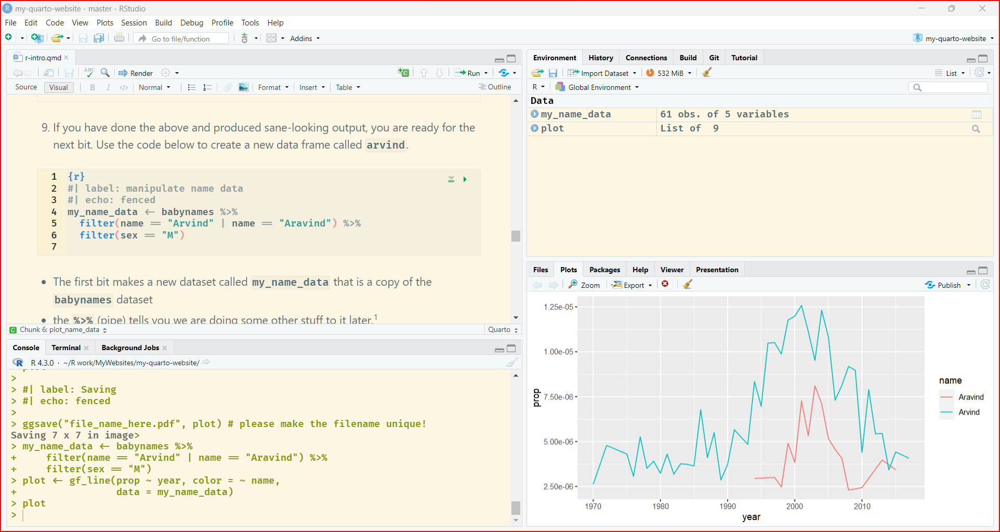
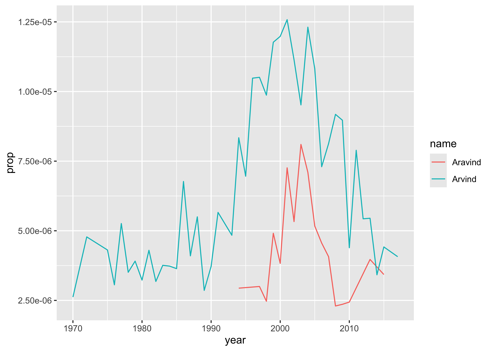

{kind=link}
```{r}
#| label: setup
knitr::opts_chunk$set(warnings = TRUE, errors = FALSE, messages = TRUE)
library(knitr) # to use this….document! More later!!
library(tidyverse) # Data Management and Plotting!!
library(babynames) # A package containing, yes, Baby Names
```🐉 Introduction to R and RStudio
R
RStudio
Posit
Metaphors with Data and Geometry
Abstract
How to use R and RStudio
At the end of this Lab, we will:
- have installed R and RStudio on our machines
- understood how to add additional R-packages for specific features and graphic capability
- run code within RStudio and interpret the results
- have learnt to look for help within R and RStudio
- learnt to use Quarto in R, which a document format for reproducible report generation
This guide will lead you through the steps to install and use R, a free and open-source software environment for statistical computing and graphics.
What is R?
-
R is the name of the programming language itself, based off S from Bell Labs, which users access through a command-line interpreter (
>)
What is RStudio?
- RStudio is a powerful and convenient user interface that allows you to access the R programming language along with a lot of other bells and whistles that enhance functionality (and sanity).
Our end goal is to get you looking at a screen like this:

Install R from CRAN, the Comprehensive R Archive Network. Please choose a precompiled binary distribution for your operating system.
Launch R by clicking this logo 2 + 2 and check !
Close R.
Install the free, open-source edition of RStudio: http://www.rstudio.com/products/rstudio/download/
RStudio provides a powerful user interface for R, called an integrated development environment. RStudio includes:
- a console (the standard command line interface:
>), - a syntax-highlighting editor that supports direct code execution, and
- tools for plotting, history, debugging and work space management.
Launch RStudio. You should get a window similar to the screenshot you see here, but yours will be empty. Look at the bottom left pane: this is the same console window you saw when you opened R in step @Check-In-R
- Place your cursor where you see
>and typex <- 2 + 2again hit enter or return, then typex, and hit enter/return again. - If
[1] 4prints to the screen, you have successfully installed R and RStudio, and you can move onto installing packages.
The version of R that you just downloaded is considered base R, which provides you with good but basic statistical computing and graphics powers. For analytical and graphical super-powers, you’ll need to install add-on packages, which are user-written, to extend/expand your R capabilities. Packages can live in one of two places:
They may be carefully curated by CRAN (which involves a thorough submission and review process), and thus are easy install using
install.packages("name_of_package", dependencies = TRUE)in your CONSOLE.Personal repositories of packages created by practitioners, which are usually in Github.
Place your cursor in the CONSOLE again (where you last typed x and [4] printed on the screen). You can use the first method to install the following packages directly from CRAN, all of which we will use:
Installation and Usage of R Packages!
To install a package, you put the name of the package in quotes as in
install.packages("name_of_package"). Mind your use of quotes carefully with packages.To use an already installed package, you must load it first, as in
library(name_of_package), leaving the name of the package bare. You only need to do this once per RStudio session.
- If you want help, no quotes are needed:
help(name_of_package)or?name_of_package. - If you want the citation for a package (and you should give credit where credit is due), ask R as in
citation("name_of_package").
We will get acquainted with the Quarto Document format, which allows us to mix text narrative, code, code-developed figures and items from the web in a seamless document. Quarto can be used to generate multiple formats such as HTML, Word, PDF from the same text/code file. Something that can:
- provide a visualization
- provide insight
- tell a story
- is reproducible
- be a call to action or a recommendation
Quarto is already installed along with RStudio!! We can check if all is in order by running a check in the Terminal in RStudio. 
The commands are:
quarto check installquarto check knitr
If these come out with no errors then we are ready to fire up our first Quarto document.
Let us now create a brand new Quarto document, create some graphs in R and add some narrative text and see how we can generate our first report!
- Fire up a new Quarto document by going to:
File -> New File -> Quarto Document. - Give a title to your document ( “My First Quarto Document”, for example.
- Change the author name to your own! Keep HTML as your output format
- Switch to
Visualmode, if it is not already there. Use the visual mode tool bar.

-
Click on the various buttons to see what happens. Try to create
Sections,code chunks,embedding imagesandtables.Add Anything ShortcutTry the “add anything” shortcut! Type “/” anywhere in your Quarto Doc, while in Visual Mode, and choose what you want to add from the drop-down menu!
Create a
code chunkas shown below. You can either use the visual tool bar to create it, or simply hit the copy button in the code chunk display on this website and paste the results into your Quarto document. Check every step!
Hit the green “play” button to run this “setup” chunk to include in your R session all the installed packages you need.
Let us greet our data first !!
```{r}
#| label: babynames data
glimpse(babynames)
head(babynames)
tail(babynames)
names(babynames)
```Rows: 1,924,665
Columns: 5
$ year <dbl> 1880, 1880, 1880, 1880, 1880, 1880, 1880, 1880, 1880, 1880, 1880,…
$ sex <chr> "F", "F", "F", "F", "F", "F", "F", "F", "F", "F", "F", "F", "F", …
$ name <chr> "Mary", "Anna", "Emma", "Elizabeth", "Minnie", "Margaret", "Ida",…
$ n <int> 7065, 2604, 2003, 1939, 1746, 1578, 1472, 1414, 1320, 1288, 1258,…
$ prop <dbl> 0.07238359, 0.02667896, 0.02052149, 0.01986579, 0.01788843, 0.016…[1] "year" "sex" "name" "n" "prop"- If you have done the above and produced sane-looking output, you are ready for the next bit. Use the code below to create a new data frame called
arvind.
```{r}
#| label: manipulate name data
my_name_data <- babynames %>%
filter(name == "Arvind" | name == "Aravind") %>%
filter(sex == "M")
```- The first bit makes a new dataset called
my_name_datathat is a copy of thebabynamesdataset - the
%>%(pipe) tells you we are doing some other stuff to it later.1 - The second bit
filtersourbabynamesto only keep rows where thenameis eitherArvindorAravind(read|as “or”.) - The third bit applies another
filterto keep only those where sex is male.
Let’s check out the data.
```{r}
my_name_data
glimpse(my_name_data)
```Rows: 61
Columns: 5
$ year <dbl> 1970, 1972, 1975, 1976, 1977, 1978, 1979, 1980, 1981, 1982, 1983,…
$ sex <chr> "M", "M", "M", "M", "M", "M", "M", "M", "M", "M", "M", "M", "M", …
$ name <chr> "Arvind", "Arvind", "Arvind", "Arvind", "Arvind", "Arvind", "Arvi…
$ n <int> 5, 8, 7, 5, 9, 6, 7, 6, 8, 6, 7, 7, 7, 13, 8, 11, 6, 8, 12, 10, 1…
$ prop <dbl> 2.620e-06, 4.780e-06, 4.310e-06, 3.060e-06, 5.260e-06, 3.510e-06,…- Again, if you have sane-looking output here, move along to plotting the data!
```{r}
#| label: plot_name_data
plot <- gf_line(prop ~ year, color = ~ name,
data = my_name_data)
```Now if you did this right, you will not see your plot!
- Because we saved the
ggplotwith a name (plot), R just saved the object for you. But check out the top right pane in RStudio again: under theEnvironmentpane you should seeplot, so it is there, you just have to ask for it. Here’s how:
```{r}
plot
```
- Now hit the
Renderbutton on your Visual toolbar and see what happens!! Try to use the drop down menu next to it and see if there are more output file options!!
Edit my code above to create a new dataset. Pick 2 names to compare how popular they each are (these could be different spellings of your own name, like I did, but you can choose any 2 names that are present in the dataset), and create a new data object with a new name. Make the new plot, changing the name of the
data=argumentmy_name_dataingf_lineto the name of your new dataset.Write narratives comments wherever suitable in your Quarto document. MAke sure you don’t type inside your code chunks. See if you can write your comments in sections which you can create with your visual tool bar, or by using the “add anything” shortcut.
Save your work ( your Quarto document itself) so you can share your favorite plot with us.
Share your Plot: You will not like the looks of your plot if you mouse over to
Exportand save it. Instead, useggplot2’s command for saving a plot with sensible defaults:
Type
help(ggsave) in your Console.```{r}
#| label: Saving
ggsave("file_name_here.pdf", plot) # please make the filename unique!
```
We have installed R, RStudio and created our Quarto document, complete with graphs and narrative text. We also rendered our Quarto doc into HTML and other formats!
R for Data Science, Workflow: Basics Chapter: http://r4ds.had.co.nz/workflow-basics.html
Modern Dive, Getting Started Chapter: http://moderndive.com/2-getting-started.html
R & RStudio Basics: https://bookdown.org/chesterismay/rbasics/3-rstudiobasics.html
RStudio IDE Cheatsheet: https://github.com/rstudio/cheatsheets/blob/master/rstudio-ide.pdf
- https://rmarkdown.rstudio.com/index.html
- https://ysc-rmarkdown.netlify.app/slides/01-basics.html Nice RMarkdown presentation and “code movies” !
- https://www.markdowntutorial.com
- https://quarto.org/docs/authoring/markdown-basics.html How to do more with Quarto HTML format
- Complete the markdown tutorial in [reference 1]
- Look through the Slides in [reference 2]
- Create a fresh Quarto document and use as many as possible of the RMarkdown constructs from the Cheatsheet [reference 1]
Footnotes
Insert the
pipecharacter using the keyboard shortcutCTRL + SHIFT + M.↩︎